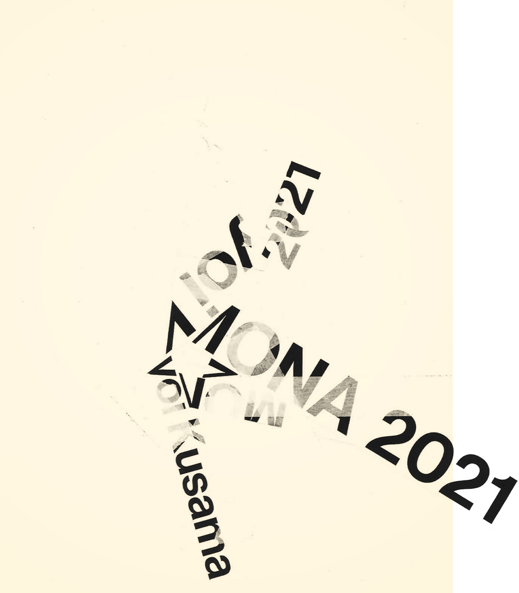

Phoebe Li Portfolio
Application for MC250
Master of Communication Design
Semester 2, 2025
KUSAMA
Next: A2 Milk
Previous: Caribbean Blue
Typography
An experimental poster collage for Yayoi Kusama's 2021 MONA exhibition, crafted with paper and masking tape. An exploration of form using minimal elements; using typographic treatment as a compositional tool.
Poster
